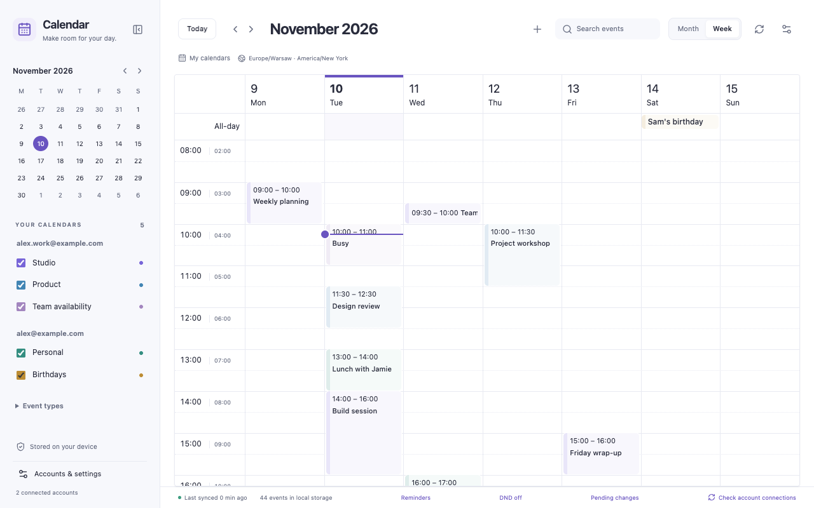
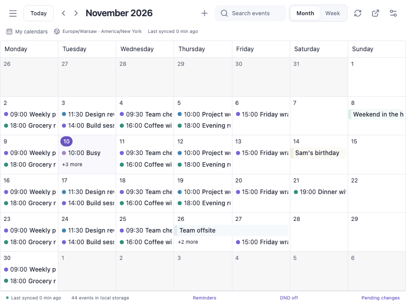

Privacy first. 100% free.
Your Google calendars, together
Every calendar.
One calmer view.
Work meetings, family plans and a little time for yourself. Bring your Google calendars together in Chrome, with a clear view of your day and reminders that fit your life.
100% free. No subscriptions. No hidden costs.
Your saved calendar stays on your computer. No ads. No tracking.

Multiple accountsOne place to look
Month + weekThe right amount of detail
Available offlineYour saved calendar stays close
100% freeNo subscriptions. No hidden costs.
Less switching. More clarity.
A small space.
A better overview.
Check your day from the toolbar, or give the full calendar its own tab. Choose which accounts and calendars appear, then filter down to what matters.
- Calendars grouped by account
- Color-coded events and shared busy periods
- Search and Google event-type filters
- A toolbar badge for your next event

A closer look
Built around your actual day.
Actual extension screens.
Illustrative accounts and events.
See the month.
Keep the context.
Bring work and personal calendars into a single view. Calendar colors, all-day events and shared availability help you see what is coming.
Download image
The details make the difference
A calendar that fits
the way you work.
Useful defaults.
Room to make it your own.
- 01 Work and life, together
- See your work and personal plans together, without switching between accounts. Choose the calendars you want to see and pause any you don't need.
- 02 Two ways to see your time
- Look ahead at the whole month or focus on the week in front of you. Give busy hours more room, or fit your whole day into view.
- 03 Events with all the details
- Make and change plans right from the calendar. Invite guests, add a location or notes, and include Google Meet where available.
- 04 Make regular plans once
- Set up regular catch-ups, weekly classes or repeating appointments. Change just one date or the whole series when plans shift.
- 05 Alerts your way
- Choose when reminders appear and what they sound like. Use your own sound, adjust the volume, or snooze when you need a few more minutes.
- 06 Make space for quiet
- Pause alerts for a little while or set regular quiet hours. Keep evenings calm and give focused work some breathing room.
- 07 Time zones, side by side
- See two time zones together, so a meeting across the world is easier to place in your day. Choose the clock format that feels natural to you.
- 08 Your saved plans, even offline
- Keep checking events already saved on your computer when you lose your connection. New changes wait until they can reach Google.
- 09 Stay in control when plans change
- If a plan changes somewhere else, review both versions before choosing what to keep. If Google needs you to sign in again, your saved calendar stays available.
- 10 The right details, on demand
- Search for a plan, focus on one calendar, or hide the event types you don't need. Hover for a quick preview and click for the details.
- 11 Comfortable or compact
- Go light or dark. Keep things compact or give them more space. See your next event's time right on the toolbar, and let your settings save automatically.
- 12 Keep sensitive notes out
- Choose not to download event descriptions while keeping times, titles and the other details you need. You decide which accounts to connect.
Chrome needs to be running for reminders. Sleep and your computer's notification settings can delay or silence alerts.
A home on your device
Your calendar.
Your local space.
Your day is personal. Your saved calendar, preferences and notification sounds stay in Chrome on your computer. Calendar Checker doesn't send your calendar to the developer, sell your data or track how you use it.
You choose the Google accounts to connect. Sign-in and calendar updates go straight to Google. Your original events stay in your Google accounts; Calendar Checker's saved copy stays with you.
Read the privacy policyYou choose the accountsConnect only the Google calendars you want. Your Gmail messages aren't read.
Saved on your computerYour calendar copy stays in your browser, ready when you need it offline.
No tracking. No data sales.No ads, no usage tracking, and no calendar information sent to the developer.
Make room for your day
Ready when you are.
Calendar Checker is in early access. This version needs manual installation and a one-time Google setup; it isn't in the Chrome Web Store yet.
-
01
Set up early access
The step-by-step installation guide explains what you'll need to add this early version to Chrome.
-
02
Bring your calendars
Connect your Google accounts and choose the work and personal calendars you want to see.
-
03
Make it yours
Pick your view, reminders and quiet hours. Pin the calendar in Chrome and get on with your day.